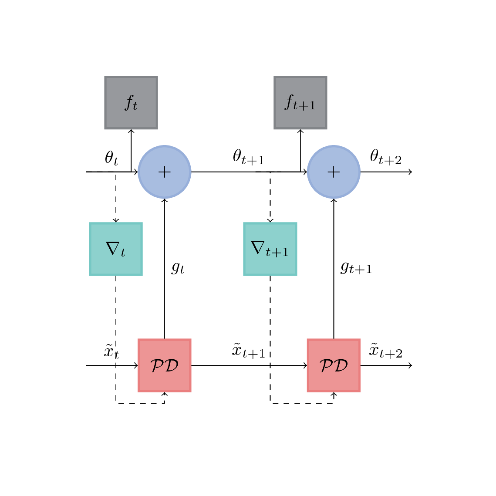

In my previous post, I described a powerful optimization framework known as the Primal Dual Framework. The goal of this new post is to have a little bit of fun with the ROF model and the primal dual framework!
While the ROF model is efficient for denoising, its form is hand crafted, and one might wonder if there might be a more optimal formulation for this problem. Since the Primal Dual Framework works for a more general set of problems, i.e.:
$$ \begin{align} & \underset{x}{\text{minimize}} & & M(x) + R(Lx) \end{align} $$ with:
- \(M\) a lower semi continuous function
- \(R\) a lower semi continuous function
- \(L\) a continuous linear operator
we are going to explore in this post the possibility of learning these functions \(M\), \(R\)and \(L\) through a neural net with the observed images as input and the ground truth images as outputs. The layers will be custom layers consisting of the parametrized Primal Dual steps. The goal will be to optimize these parameters.
The idea here is a bit similar to the OptNet paper.
A more general formulation of the ROF model
But first, let's begin by giving a more general formulation of the ROF model: $$ \begin{align} & \underset{x}{\text{minimize}} & & \frac{1}{2} x^T H x + b^T x + \left\| Lx \right\|_1 \end{align} $$ with:
- \(H\) a symmetric invertible matrix of \(\mathcal{M}_n(\mathbb{R}^n\))
- \(b\) is a vector in \(\mathbb{R}^n\)
- \(L\) is a continuous linear operator
Let's now use the following caracterization of a norm : \(\left\| Lx \right\|_1 = \underset{y \in [-1, 1]^n}{\max}\langle L^T y, x \rangle\) in order to introduce a saddle problem formulation. The problem can now be written: $$ \begin{align} & \underset{x}{\min} \underset{y \in [-1, 1]^n }{\max}& & \frac{1}{2} x^T H x + \langle b + L^T y, x \rangle \end{align} $$ A simple gradient computation gives: \(x^* = -H^{-1} (b + L^T y) \). The dual problem is then: $$ \begin{align} & \underset{y \in [-1, 1]^n}{\text{maximize}} & & -\frac{1}{2} (b+L^T y )^T H^{-1} (b+L^Ty) \end{align} $$ We are going to note this function to maximize \(D(y; H, b, L)\).
The primal-dual gap is defined as : \(G(x, y ; H, b, L) = P(x; H, b, L) - D(y; H, b, L)\). Since this is a saddle point problem, we have that \(G(x^*, y^* ; H, b, L) = G(x^* ; H, b, L) = 0 \)
Now, we are going to consider this optimization problem through a computational graph view. It looks very similar to the one in the excellent paper Learning to learn by gradient descent by gradient descent
: If we note \(\theta_t = (H, b, L)_t\) the vector of parameters that we are trying to learn in the Primal Dual problem, \(\mathcal{PD}\) the recurrent neural net that unrolls \(n\) iterations of the Primal Dual algorithm, \(\tilde{x}_t\) the primal variable after \(nk\) iterations, \(k \in \mathbb{N}\).
Let's start by learning a simple linear operator
In the previous general model, if we pose \( H = \lambda I_n \), \( b = -2 img_{obs}\) and \(L : x \mapsto \sum_{(i, j) \in \mathcal{E}} \|x_i -x_j \|_1\), we can get back to the usual ROF model, as formulated in the Chambolle Pock paper: $$ \begin{align} & \underset{x}{\text{minimize}} & & \| x - img_{obs} \|_2^2 + \frac{\lambda}{2} \left\| Lx \right\|_1 \end{align} $$ Since this model has been studied in the previous blog post, we are going to introduce the linear operator \(L : x ; w \mapsto \sum_{(i, j) \in \mathcal{E}} w_{i,j} \|x_i -x_j \|_1\). A calculation shows that \(L\) is a linear operator, and that its adjoint \(L^T\) is \(L^T = W \odot div \), \(\odot \) being the Hadamard product here. Here are the noised, denoised and original images. In this first new scenario, we are going to minimize the Mean Squared Error between the Ground Truth and the primal variable after \( n\) iterations of the primal dual algorithm: $$ \begin{align} & \underset{w}{\text{minimize}} & & \sum{\left\| x_i^{*} - x_i^{GT} \right\|_2^2 } \\ & ST & & x_i^{*} = \underset{x}{\arg \min P(x; w)} \end{align} $$ Each function was optimized for 80 steps and the trained optimizers were unrolled for 10 steps
Let's start by learning a simple linear operator
Primal Dual algorithm
So now let's see how to combine the last two ideas in our optimization problem. First, we introduce the Moreau envelope for the \( (M_i)_{i} \) : $$ \begin{align} \arg \inf \limits{x \in \mathcal{X}} \sum_{i} M_i (x_i) + \frac{1}{\tau} \left\| x_i - \tilde{x}_i \right\|^2_2 + R(Lx) \end{align} $$ Then we apply the Fenchel Transform to \(R\): $$ \begin{align} \arg \inf \limits{x \in \mathcal{X}} \sum_{i} M_i (x_i) + \frac{1}{2\tau} \left\| x_i - \tilde{x}_i \right\|^2_2 + \langle y , Lx \rangle - R^{*}(y) \end{align} $$ So now, all the \(x_i\) are decoupled. Their minimization is achieved by computing a proximal operator. But \(R^{*}\) is not assured to be smooth, so we are going to use the Moreau envelope again on \(R^{*}\): $$ \begin{align} \arg \inf \limits{x \in \mathcal{X}} \sum_{i} M_i (x_i) + \frac{1}{2\tau} \left\| x_i - \tilde{x}_i \right\|^2_2 + \langle y , Lx \rangle - R^{*}(y) - \frac{1}{2 \sigma} \left\| y - \tilde{y} \right\|^2_2 \end{align} $$ And now, we can transform this problem into an iterative one by doing: $$ \begin{align} \arg \inf \limits{x \in \mathcal{X}} \sum_{i} M_i (x_i^{(n)}) + \frac{1}{2\tau} \left\| x_i^{(n)} - x_i^{(n-1)} \right\|^2_2 + \langle y^{(n)} , Lx^{(n)} \rangle - R^{*}(y^{(n)}) - \frac{1}{2 \sigma} \left\| y^{(n)} - y^{(n-1)} \right\|^2_2 \end{align} $$ So now, we have, for all \(n\), a problem that is convex with respect to \(x^{(n)}\) and concave with respect to \( y^{(n)}\); we have a saddle point problem formulation! And we know that the two series converge to a fixed saddle point.
Now that we finally have a problem that is iteratively optimizable, let's see the pseudo code of the Primal Dual Algorithm:
\begin{algorithm}
\caption{First Order Primal Dual Algorithm}
\begin{algorithmic}
\PROCEDURE{primal-dual}{$M_i, R, L, data$}
\STATE Compute $R^{*}$
\STATE Initialize Primal variable $x^0 \leftarrow 0$
\STATE Initialize Dual variable $y^0 \leftarrow 0$
\STATE $\tilde{x} \leftarrow 0$
\WHILE{Stopping Criteria is not met}
\STATE {Optimize dual variable $y^{(n+1)} \leftarrow prox_{\sigma (\langle y, L\tilde{x} \rangle - R^{*}
(y^{(n)}))} (y^{(n)})$}
\STATE {Optimize the primal variable $x^{(n+1)} \leftarrow prox_{\tau(\sum_i M_i(x_i) + \langle
L^{T}y^{(n)}, x \rangle) (x^{(n)})}$}
\STATE {Smooth Variable $\tilde{x} \leftarrow x^{(n+1)} + \theta (x^{(n+1)} - x^{(n)})$}
\ENDWHILE
\RETURN $x^{(n)}$
\ENDPROCEDURE
\end{algorithmic}
\end{algorithm}
A real life example
In this section, we are going to look at an example of image denoising following the ROF model (from Rudin, Osher and Fatemi). Let's say we have a noisy image \(c\), and we are going to note \(x\) the primal variable. The ROF problem for denoising is the following optimization problem: \[ min_x \frac{\lambda}{2} \left\| x - c \right\|^2_2 + \left\| \nabla x \right\|_1 \].
In this context, the convex conjugate of the regularization term is: \[F^* (y) = \sup \limits_{x \in \mathbb{R}^d} {\langle x, y \rangle - \left\|x\right\|} \\ = \sup \limits_{x \in \mathbb{R}^d} {\sum_{i=1}^d x_i y_i - \|x_i\|}\] \(y_i\) must be less or equal than 1, otherwise \(F^*\) is not finite. Then we can write: \[\sum_{i=1}^d x_i y_i - \|x_i\| \leq \sum_{i=1}^d x_i - \|x_i\| \leq 0\] The supremum is then attained for \(0_{\mathbb{R}^d}\). So the convex conjugate of this term is: \[F^*(y) = \mathcal{I}_{\left\|.\right\|_{\infty}\leq 1} (y)\] After a direct calculation of \( (Id + \sigma \partial F^*)^{-1} (\tilde{p})\), the proximal of this term is: \[prox_{\sigma F^*} (\tilde{p}) = \frac{\tilde{p}_{ij}}{max(1, \| \tilde{p}_{ij}\|)}\]
Another direct calcultation of \( (Id + \tau \partial G)^{-1} (\tilde{u})\) gives: \[ prox_{\tau G} (\tilde{u}) = \frac{\tilde{u}+\lambda \tau \nabla \tilde{u}}{1 + \lambda \tau}\]
Let's see now how to implement the differential operators:
def forward_gradient(im):
"""
Function to compute the forward gradient of the image I.
Definition from: http://www.ipol.im/pub/art/2014/103/, p208
:param im: numpy array [MxN], input image
:return: numpy array [MxNx2], gradient of the input image, the first channel is the horizontal gradient, the second
is the vertical gradient.
"""
h, w = im.shape
gradient = np.zeros((h, w, 2), im.dtype) # Allocate gradient array
# Horizontal direction
gradient[:, :-1, 0] = im[:, 1:] - im[:, :-1]
# Vertical direction
gradient[:-1, :, 1] = im[1:, :] - im[:-1, :]
return gradient
def backward_divergence(grad):
"""
Function to compute the backward divergence.
Definition in : http://www.ipol.im/pub/art/2014/103/, p208
:param grad: numpy array [NxMx2], array with the same dimensions as the gradient of the image to denoise.
:return: numpy array [NxM], backward divergence
"""
h, w = grad.shape[:2]
div = np.zeros((h, w), grad.dtype) # Allocate divergence array
# Horizontal direction
d_h = np.zeros((h, w), grad.dtype)
d_h[:, 0] = grad[:, 0, 0]
d_h[:, 1:-1] = grad[:, 1:-1, 0] - grad[:, :-2, 0]
d_h[:, -1] = -grad[:, -2:-1, 0].flatten()
# Vertical direction
d_v = np.zeros((h, w), grad.dtype)
d_v[0, :] = grad[0, :, 1]
d_v[1:-1, :] = grad[1:-1, :, 1] - grad[:-2, :, 1]
d_v[-1, :] = -grad[-2:-1, :, 1].flatten()
# Divergence
div = d_h + d_v
return div
It is of critical importance that these two operators are adjoint to the sign of each other. We can check that it is the case by check the value of the following expression is \(0\):
check = abs((y[:] * gx[:]).sum() + (dy[:]*x[:]).sum())You can find this in the test folder of the Github Code .
Then, we are going to implement the dual proximal operator:
def proximal_linf_ball(p, r=1.0):
"""
Proximal operator for sum(gradient(x)).
:param p: numpy array [MxNx2],
:param r: float, radius of infinity norm ball.
:return: numpy array, same dimensions as p
"""
n_p = np.maximum(1.0, norm2(p) / r)
return p / n_p[..., np.newaxis]
And the main loop of the algorithm becomes:
import numpy as np
import matplotlib.pyplot as plt
import skimage
from scipy.misc import face
from norm import norm1, norm2
from differential_operators import backward_divergence, forward_gradient
from proximal_operators import proximal_linf_ball
def dual_energy_rof(y, im_obs):
"""
Computes the dual energy of ROF problem.
:param y:
:param im_obs: numpy array, observed image
:return: float, dual energy
"""
nrg = -0.5 * (im_obs - backward_divergence(y))**2
nrg = nrg.sum()
return nrg
def primal_energy_rof(x, img_obs, clambda):
"""
Computes the primal energy of the ROF problem.
:param x:
:param img_obs:
:param clambda:
:return:
"""
energy_reg = norm1(forward_gradient(x)).sum()
energy_data_term = 0.5*clambda * norm2(x - img_obs).sum()
return energy_reg + energy_data_term
if __name__ == '__main__':
img_ref = np.array(face(True)) # Reference image
img_obs = skimage.util.random_noise(img_ref, mode='gaussian') # noisy image
# Parameters
norm_l = 7.0
max_it = 3000
theta = 1.0
tau = 0.01
sigma = 1.0 / (norm_l * tau)
lambda_rof = 7.0
# Variables
x = img_obs
x_tilde = x
h, w = img_ref.shape
y = np.zeros((h, w, 2))
p_nrg = primal_energy_rof(x, img_obs, lambda_rof)
print "Primal Energy = ", p_nrg
d_nrg = dual_energy_rof(y, img_obs)
print "Dual Energy = ", d_nrg
# Solve ROF
primal = np.zeros((max_it,))
dual = np.zeros((max_it,))
gap = np.zeros((max_it,))
primal[0] = p_nrg
dual[0] = d_nrg
y = forward_gradient(x)
for it in range(max_it):
# Dual update
y = y + sigma * forward_gradient(x_tilde)
y = proximal_linf_ball(y, 1.0)
# Primal update
x_old = x
x = (x + tau * backward_divergence(y) + lambda_rof * tau * img_obs) / (1.0 + lambda_rof * tau)
# Smoothing
x_tilde = x + theta * (x - x_old)
# Compute energies
primal[it] = primal_energy_rof(x_tilde, img_obs, sigma)
dual[it] = dual_energy_rof(y, img_obs)
gap[it] = primal[it] - dual[it]
plt.figure()
plt.plot(np.asarray(range(max_it)), primal, label="Primal Energy")
plt.legend()
plt.figure()
plt.plot(np.asarray(range(max_it)), dual, label="Dual Energy")
plt.legend()
plt.figure()
plt.plot(np.asarray(range(max_it)), gap, label="Gap")
plt.legend()
# Plot reference, observed and denoised image
f, ((ax1, ax2), (ax3, ax4)) = plt.subplots(2, 2, sharex='col', sharey='row')
ax1.imshow(img_ref)
ax1.set_title("Reference image")
ax2.imshow(img_obs)
ax2.set_title("Observed image")
ax3.imshow(x)
ax3.set_title("Denoised image")
plt.show()
The code is available in its full here.
You can leave comments down here, or contact me through the contact form of this blog if you have questions or remarks on this post!